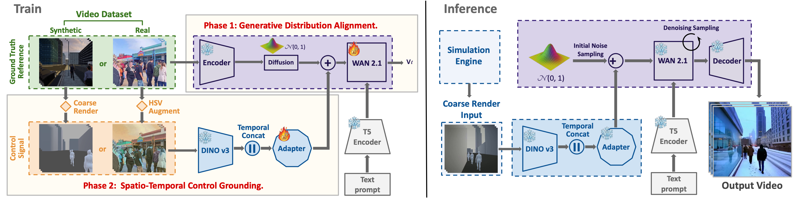

Abstract
Traditional rendering pipelines rely on complex assets, accurate materials and lighting, and substantial computational resources to produce realistic imagery, yet they still face challenges in scalability and realism for populated dynamic scenes. We present C2R (Coarse-to-Real), a generative rendering framework that synthesizes real-style urban crowd videos from coarse 3D simulations. Our approach uses coarse 3D renderings to explicitly control scene layout, camera motion, and human trajectories, while a learned neural renderer generates realistic appearance, lighting, and fine-scale dynamics guided by text prompts.
To overcome the lack of paired training data between coarse simulations and real videos, we adopt a two-stage synthetic-real domain-hedging strategy that first learns a strong generative prior from large-scale real footage, then introduces controllability by using a small amount of paired synthetic coarse-fine data to anchor shared implicit spatio-temporal features across domains. The resulting system supports coarse-to-fine control, generalizes across diverse CG and game inputs, and produces temporally consistent, controllable, and realistic urban scene videos from minimal 3D input.
Pipeline Overview

Results
Our method generates photorealistic urban crowd videos from coarse 3D simulations across different scenes. For each of the scenes below, the top left video is the coarse driving input signal.
Changing Cities, Weather, and Time of Day Across Different Input Coarsening Levels
Adding Landmarks
New York on A Different Day and Time
Coarsening Level Adaptation
Our method is compatible with different coarsening levels of input signal. On the left column we show results for very coarse signal, where our model inpaints many details. On the right we show a mid-coarse geometry as input that already includes some fine details. Our model successfully follows the richer input signal, generating a video with the corresponding geometry.
Applications
Our model can turn a low-poly game video into real-style even though it has never been trained on any game videos. It can add realism to the existing dynamics and appearance, add extra contents and solve collision issues in the original video.
Comparison
Baseline comparison on coarse block-based character control
We compare C2R against several video generation and control baselines under extremely coarse block-character conditioning. While competing methods rely on additional depth, tracking, or reference-frame inputs and often fail to preserve character identity, motion, or scene structure, C2R directly uses the control video and text prompt to achieve robust synthetic-to-real transfer. Our method consistently preserves the input layout, motion dynamics, and character consistency, demonstrating the effectiveness of the proposed synthetic-real domain-hedging strategy for controllable realistic video generation from minimal coarse inputs.
Baseline comparison on coarse humanoid character control
We also compare C2R against several recent baselines under the same prompt and control setup using humanoid coarse characters in the control input videos. Existing approaches typically rely on additional depth, tracking, or reference-image conditioning, yet often struggle to maintain accurate motion, camera trajectories, or structural consistency. In contrast, C2R directly uses the control video and text prompt without requiring reference images, achieving stronger controllability and more consistent synthetic-to-real transfer. While some baselines produce visually appealing outputs, they frequently fail to faithfully preserve the input motion and scene structure, highlighting the effectiveness of our domain-hedging strategy for controllable realistic video generation.
Off-the-shelf and Commercial Models
WAN2.1 (left column) and SORA (right column): show limited controllability over human motion and camera trajectories, and tend to generate similar viewing angles across populated urban scenes.
Seedance 2.0 extended qualitative evaluation: Under the same input conditions (coarse control video and text prompt), Seedance 2.0 exhibits limited ability to leverage the control signal, leading to weak alignment with the intended structure and semantics.